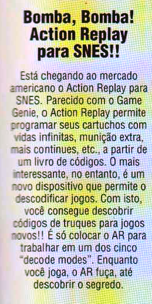
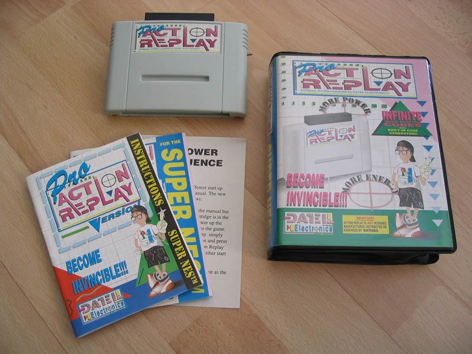

BOMBA!!! Action Replay para o SNES!
 :::. Por Gigacom
:::. Por Gigacom
fonte: Gamepower nº 4

Pra quem ainda não conhece e nem faz idéia do que é, o Action Replay tem a mesma função que os Game Shark de hoje, ou seja, é usado para zuar o jogo e permitir ou habilitar algumas coisas que por vias normais seria impossivel de se fazer. Esse tipo de aparelho não serve só para fazer com que o jogo mude de fase na hora que o jogador quiser, ou que o seu personagem seja invencivel... na verdade, é possivel fazer muito mais com esse aparelhinho, como forçar o aparecimento de fases e itens ocultos no meio do código do jogo e que não aparecem quando se está jogando normalmente. É bastante usado em emulador hoje em dia, por quem gosta de caçar pistas sobre, por exemplo, a tão famosa Hidden Palace, a fase deletada de um dos jogos do Sonic e outras coisas do tipo em outros jogos.
O AR nunca chegou a ser famoso por essas bandas do atlântico, mas na Europa e em outros países, era o que tinha de melhor para ajudar os jogadores a roubar no jogo.
No SNES, era um cartucho para entrada de outro cartucho, e você ia lá e colocava os códigos para alterar o comportamento de um determinado jogo, e curtia o game na loucura toda que o AR fazia. Muito útil em algumas situações, mas nem tanto em outras, de qualquer forma, era apenas um aparelhinho, um acessório a mais no meio de uma montoeira de bugigangas que existiam na época...
Então, vem a pergunta: o que tem
de tão senssacional nesse negocio? Meu amigo, veja bem, o diabo
do AR foi lançado para o SUPER NES!!! Se ainda não caiu a
ficha, explico: a Nãointendo, NUNCA apoiou qualquer iniciativa
do que quer que fosse para lançar acessórios para seus
video games, se estes não estivessem de acordo com a politica da
empresa. Uma regrinha que ainda hoje tem por lá nos castelos da
Nintendo, é que um jogo não deve possuir truques para
ajudar o jogador a tipo... ser imortal, ter vidas infinitas, pular de
fases... e era exatamente esse tipo de coisa que o AR faz acontecer na
marra nos jogos 
Se foi uma briga da por**a da Nintendo para que o Game Genie não saisse para o NES e SNES, foi outra briga que o AR tambem enfrentou para ser lançado, ainda mais nos Estados Unidos. No final das contas, acabou saindo mesmo sem o apoio da Nintendo, e o povo teve outra alternativa ao Game Genie que dorminava essa aréa.
Essa é a versão europeia do Action Replay Pro, fez relativo sucesso por lá no velho mundo, porém, anos mais tarde, o Action Replay para o Saturn virou febre, muita gente tinha um! Mas tambem, além de zuar o jogo da forma como o jogador quisesse, ainda dava uma turbinada no console, adicionando mais memória ram e tambem espaço para salvar jogos, além de desbloqueiar o bicho para aceitar jogos de todas as nacionalidades, um show que só ele conseguia fazer.
Acesse o Trombone e comente sobre essa matéria!


Um problema bastante comum em controles antigos é o mal funcionamento de um ou outro botão. A boa noticia é que tem como arrumar isso de um jeito facil facil :D